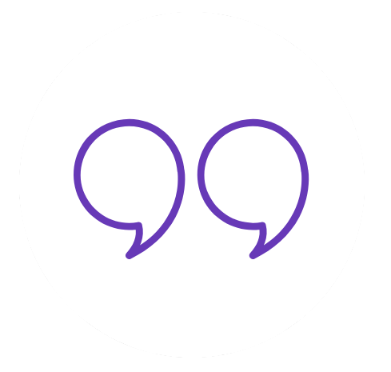

<mat-toolbar color="primary" class="nav">
  <div class="logo" routerLink="/">
    
    <span>youQuote</span>
  </div>
  <span class="spacer"></span>
  <button class="nav-toggle" mat-icon-button (click)="toggleSideNav.emit()">
    <mat-icon>menu</mat-icon>
  </button>
  <navbar-links></navbar-links>
</mat-toolbar>
